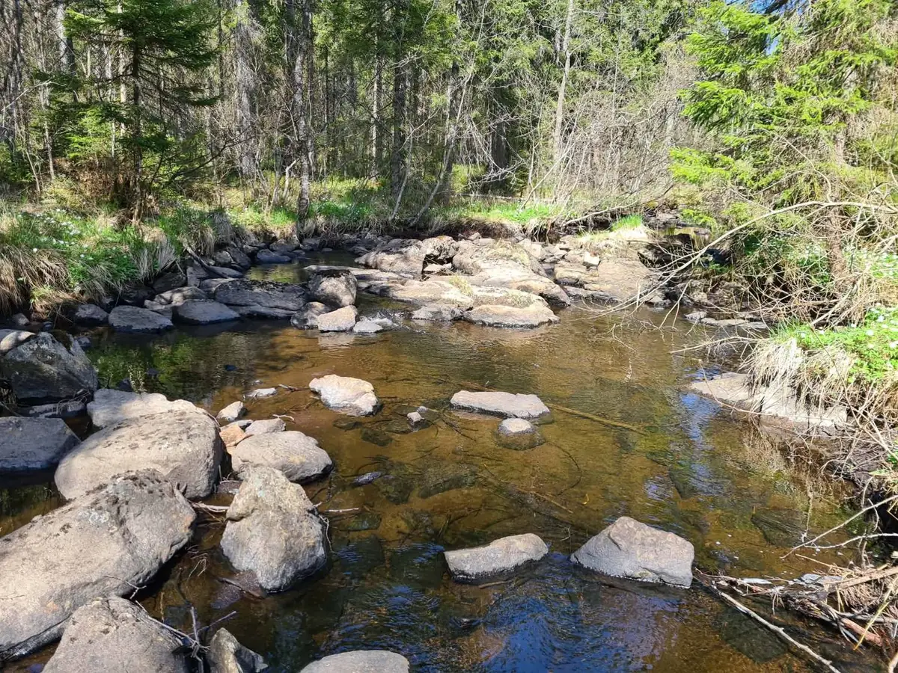

Der Duft von brennendem Birkenholz und Platz für bis zu vier Personen. Sie heizen den Ofen selbst an – Holz inklusive.
Holz inklusive – danach in der kalten Dusche abkühlen
Willkommen im Pinebo Palace – einem gemütlichen Gästehaus an einem plätschernden Bach im Wald bei Ulricehamn in Schweden. Hundefreundlich, mit holzbefeuerter Sauna und Whirlpool. Buchen Sie direkt bei uns, ohne Vermittler.
Das Pinebo Palace ist ein gemütliches Gästehaus auf unserem Hof im Wald bei Ulricehamn, direkt an einem plätschernden Bach. Hier wachen Sie mit Vogelgezwitscher und dem Rauschen des Baches auf, trinken Ihren Morgenkaffee auf der Terrasse und lassen sich Zeit.
Das Gästehaus liegt für sich, mit eigenem Eingang und einer Terrasse, die von unserem Wohnhaus abgewandt ist – so können Sie in aller Ruhe entspannen. Sie finden uns auch auf Airbnb, doch hier buchen Sie direkt bei uns: ohne Plattformgebühren und mit persönlichem Kontakt.

Durchdachte Einrichtung, ein Schlafboden unter dem Dach und eine Luftwärmepumpe für angenehme Wärme das ganze Jahr. Aller Komfort ist da – doch die Natur steht im Mittelpunkt.

Hunde sind im Pinebo Palace herzlich willkommen. Wald, Moos und Bach direkt vor der Tür – und eine eingezäunte Terrasse, auf der sich Ihr Hund frei bewegen kann.
Katzen können wir aufgrund von Allergien leider nicht aufnehmen.

Machen Sie Ihren Aufenthalt besonders entspannend. Die holzbefeuerte Sauna und den warmen Whirlpool buchen Sie einfach als Extra dazu.
Der Duft von brennendem Birkenholz und Platz für bis zu vier Personen. Sie heizen den Ofen selbst an – Holz inklusive.

Tauchen Sie nach einem Tag im Wald in 38 Grad warmes Wasser ein. Der Whirlpool ist bei Ihrer Ankunft beheizt und bereit.
Der Grundpreis beträgt 1 300 SEK/Nacht für die ganze Hütte. Keine versteckten Gebühren – buchen Sie nur dazu, was Sie möchten.
Der Bach plätschert direkt vor der Tür, der moosgrüne Wald beginnt an der Terrasse und schöne Wanderwege liegen nur 20 Autominuten entfernt.

Der Wald rund um das Gästehaus ist reich an Pilzen und Beeren. Nehmen Sie einen Korb mit auf den Spaziergang – wir verraten Ihnen gern, wo Sie suchen sollten.

Das Gästehaus liegt direkt an einem Bach. Schlafen Sie ein und wachen Sie auf mit einer ruhigen, entspannenden Klangkulisse.

Viele schöne Wanderwege liegen nur 20 Autominuten entfernt. Wir teilen gern unsere Favoriten – und verraten ein tolles Café für eine schwedische Fika (Kaffee und Kuchen).
Wählen Sie Daten und Extras direkt hier auf der Seite. Sie buchen direkt bei uns – ohne Plattformgebühren.
Wenn möglich, empfangen wir Sie gern persönlich. Ansonsten checken Sie bequem selbst über die Schlüsselbox ein. Anreise ab 15:00.
Heizen Sie die Sauna an, tauchen Sie in den Whirlpool ein und lassen Sie den Wald den Rest erledigen. Im Gästehaus finden Sie ein Hausbuch und einen QR-Code mit unseren besten Tipps. Abreise bis 11:00.
Wir sind die Gastgeber des Pinebo Palace und wohnen mit unseren Hunden Bentley und Vera in einem eigenen Haus auf demselben Hof. Das Gästehaus liegt für sich, sodass Sie ungestört sind – aber wir sind in der Nähe, falls Sie etwas brauchen.
Wir empfangen Sie gern persönlich und teilen sehr gern unsere besten Tipps: wo die Pilze wachsen, welche Wanderwege am schönsten sind und wo es in Ulricehamn die beste Fika gibt.
Bewertungen von Gästen, die über Airbnb bei uns gewohnt haben.
★★★★★
Ein fantastischer Aufenthalt von Anfang bis Ende! 🌿
So erholsam mit dem plätschernden Bach direkt nebenan, und der Whirlpool war wirklich das i-Tüpfelchen.
Großartige Gastgeber mit fantastischer Gastfreundschaft und wirklich guter Kommunikation.
Absolut empfehlenswert! Wir kommen ganz sicher wieder in diese wunderbare Idylle. ⭐
★★★★★
Als Paar mit Hund haben wir unseren Aufenthalt bei Andreas und Maria von der ersten bis zur letzten Sekunde in vollen Zügen genossen.
Das Haus liegt mitten in der Natur, direkt an einem Bach, und von der Terrasse aus hat man direkten Zugang zum wunderschönen, moosgrünen Wald. Andreas gab uns immer gute Empfehlungen und Tipps und beantwortete unsere Fragen stets blitzschnell.
In dieser gemütlichen Hütte kann man die Ruhe und die schöne schwedische Natur in vollen Zügen genießen.
Vielen Dank für den fantastischen Aufenthalt, wir kommen gern wieder!
★★★★★
Wir haben ein paar Nächte hier verbracht. Die Unterkunft hat alles, was man braucht. Das kleine Flüsschen vor den Fenstern sorgt für eine schöne, entspannende Klangkulisse.
Es gibt viele gute Wanderwege in 20 Autominuten Entfernung, und die Sauna und die kalte Dusche sind nach einem Wandertag fantastisch.. :)
★★★★★
Wir haben gerade 8 Nächte bei Andreas und Maria im Pinebo Palace Guesthouse verbracht und können ehrlich sagen, dass es eines unserer liebsten Airbnbs bisher ist. Die Unterkunft ist wunderschön eingerichtet, mit allem, was man während des Aufenthalts brauchen kann. Wir hatten eigene Bettwäsche und Handtücher dabei, aber man kann sie auch gegen eine Gebühr bei den Gastgebern mieten. Die Unterkunft ist sehr leicht zu finden, und drinnen stellten die Gastgeber viele nützliche Tipps per QR-Code und Hausbuch bereit. Andreas und Maria sind beide sehr freundlich, beantworteten alle unsere Fragen schnell und effizient und hielten während unseres Aufenthalts guten Kontakt. Sie empfahlen uns auch einige wunderbare Orte in der Nähe, ermutigten uns, im Wald Pilze zu sammeln, und empfahlen ein ausgezeichnetes Café für eine Fika. Diese Unterkunft ist ein Muss, wenn man dem Trubel des Alltags entfliehen möchte. Wir hoffen, bei unserem nächsten Schweden-Abenteuer wiederzukommen.
★★★★★
Wir hatten einen sehr schönen Aufenthalt bei Maria und Andreas! Er gab uns viele gute Tipps und war sehr hilfsbereit. 5/5!
★★★★★
Ein wunderbarer Ort!
Die Anreise ist ab 15:00 möglich, die Abreise bis 11:00. Wenn möglich, empfangen wir Sie gern persönlich – ansonsten checken Sie bequem selbst über die Schlüsselbox ein.
Ja, Hunde sind herzlich willkommen! Die Terrasse rund um das Gästehaus ist eingezäunt, sodass Ihr Hund dort frei laufen kann. Auf dem Hof sind Hunde an der Leine zu führen, und wir sammeln die Hinterlassenschaften auf. Katzen können wir aufgrund von Allergien leider nicht aufnehmen.
Ja, wir wohnen in einem eigenen Haus auf demselben Hof. Das Gästehaus liegt für sich, mit eigenem Eingang und einer Terrasse, die von unserem Wohnhaus abgewandt ist, sodass Sie Ihren Aufenthalt in aller Ruhe genießen können. Auf dem Hof leben auch unsere Hunde Bentley und Vera.
Sie können eigene mitbringen oder Bettwäsche, Handtücher und Badetücher bei uns mieten für 250 SEK. Wählen Sie es einfach bei den Extras in der Buchung aus.
Ja, es gibt viele schöne Wanderwege in 20 Autominuten Entfernung. Außerdem beginnt der Wald direkt an der Terrasse. Im Gästehaus finden Sie ein Hausbuch und einen QR-Code mit unseren besten Tipps für die Gegend.
Ja, in Ulricehamn gibt es mehrere Lebensmittelgeschäfte, nur eine kurze Autofahrt von der Hütte entfernt.
Sie können kostenlos stornieren bis 14 Tage vor der Anreise.
Entweder folgen Sie unserer einfachen Putz-Checkliste, oder Sie buchen die Endreinigung für 800 SEK dazu, dann übernehmen wir das.
Sichern Sie sich Ihre Daten, buchen Sie Sauna und Whirlpool dazu und genießen Sie ein abgeschiedenes, hundefreundliches Gästehaus mitten im Wald. Kostenlose Stornierung bis 14 Tage vor der Anreise.